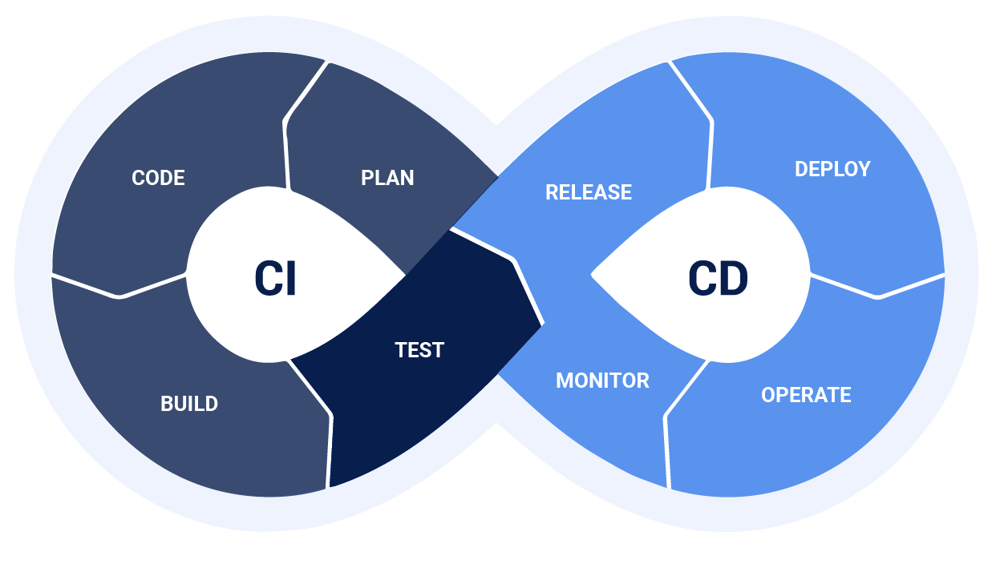

Projet Cyna
Introduction
Ce site web écris en markdown a pour but de documenter les réalisations mené durant le projet.

Contexte du Projet
L'entreprise Cyna prévoit de moderniser ses infrastructures informatiques lors de son déménagement à Genève. Ce projet vise à intégrer des solutions technologiques avancées pour améliorer la sécurité et l'optimisation des performances tout en garantissant la continuité des services. L'objectif est de répondre aux besoins croissants de l'entreprise et de ses clients dans un environnement dynamique.
Ma partie est consacré a la philosophie DevOps. Dans ce contexte-ci je dois réaliser certaines choses :
Rôles et Responsabilités de l'Ingénieur DevOps
- Infrastructure as Code (IaC) : Utilisation de Terraform pour gérer les environnements cloud, justification des choix et architecture associée.
- Gestion des Configurations : Créer et maintenir un repository GIT pour centraliser les fichiers de configuration et les scripts d'automatisation.
- Intégration Continue : Mettre en place des pipelines CI/CD pour automatiser les tests et le déploiement des applications.
- Automatisation des Incidents : Développer des solutions d'automatisation pour la gestion des incidents.
- Monitoring et Alertes : Implémenter des solutions de monitoring (Prometheus, Grafana) pour assurer la surveillance en temps réel des systèmes.
- Plan de Reprise d'Activité (PRA) : Intégrer un PRA pour la restauration rapide des configurations IaC et des systèmes en cas de défaillance.
- Documentation : Rédiger et maintenir la documentation technique relative aux infrastructures et aux processus d'automatisation.
Serveurs à Mettre en Place
Serveurs SOC (Security Operations Center): Le SOC de Cyna sera l'épine dorsale de la sécurité des infrastructures des clients. Il devra être hébergé sur une infrastructure redondante et haute performance.
Serveurs Web (Site SaaS): L’infrastructure hébergeant le site SaaS de Cyna, utilisé par les clients pour gérer leurs infrastructures de sécurité et l’achat de nouveaux services, sera optimisée pour la haute disponibilité, la scalabilité, et la sécurité via le SOC.
Le site SaaS est composé de 4 vm basé sous linux avec l'intégration d'Azure load balancer. Orchestration des ressources se fera via Kubernetes. Vue qu'il était sugéré de mettre en place 4 vm, le problème du "split brain" se pose pour kubernetes. Celui-ci survient survient dans les systèmes distribués lorsque les nœuds d'un cluster perdent la communication entre eux et continuent à fonctionner sans savoir ce que font les autres. Cela peut entraîner des données incohérentes, des décisions contradictoires ou des interruptions de service. Le problème se pose seulement pour des clusters. Donc mes 4 vm ne sont pas impacté vue qu'elles fonctionnent de manière indépendante, sans besoin de quorum.
Pour régler le problème du split brain, on peut penser a mettre un nombre impairs de serveurs. Ici, je vais utiliser un control plane géré par Azure, "AKS". Mes 4 vm seront ainsi des worker Nodes et AKS s'occupe d'être le master.
APPLICATIONS COMPTABLE: L’hébergement de l’application comptable se fera sur un serveur dédié dans le cloud (IaaS) où une base de données Oracle dernière version sera installée.
APPLICATIONS DE GESTION DE LA TRÉSORERIE: Cette application sera hébergée dans le cloud via un serveur dédié (IaaS) ou un service de base de données dans le cloud (PaaS ou SaaS)